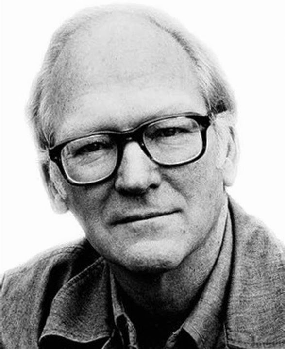
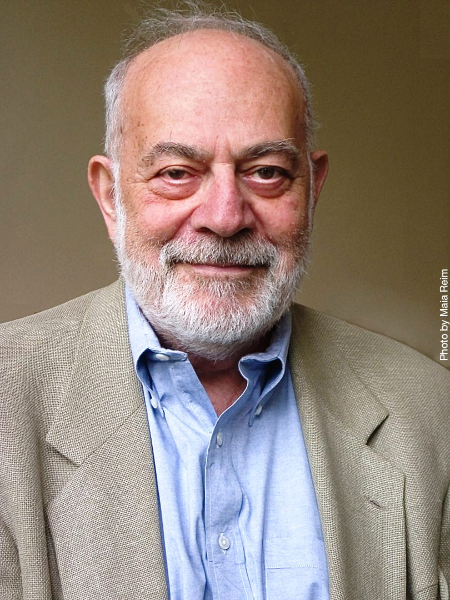
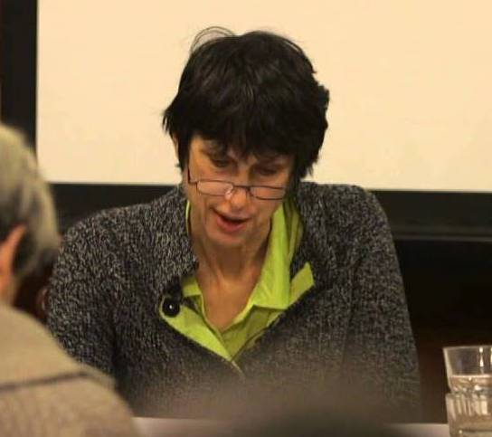

Donald Davidson> "De la acción" y "Acciones, razones y causas"
Harry Frankfurt> "El problema de la acción"
Helen Steward*> "‘Up-to-Usness’, Agency, and Determinism"
Christine Korsgaard > Actuar por una razón
Ética
Aristóteles, Kant, Korsgaard
Frankfurt y Strawson
Fischer y Kane
Haldane
Ross
Política
Al finalizar cada módulo habrá una evaluación del tema tratado.
¿Metafísica?
Como les había dicho, el tema de este módulo es la metafísica de la acción
La pregunta que nos preocupará será:
¿Qué es un acción?
Para empezar a pensar sobre esta pregunta primero quiero discutir la diferencia entre ser y parecer
Una forma de pensar la distinción entre ser y parecer es epistemológica:
otra es como son en verdad las cosas
¿ejemplos?
La imagen en el fondo no se está moviendo pero nos parece que sí.
Podemos entender la diferencia entre como nos parece y como es en virtud de las propiedades de nuestro aparato sensorial, por ejemplo. Otra forma de pensar la distinción entre ser y parecer es metafísica:
billete falso
Cuando hablamos de billetes, podemos hablar de 'real' y 'falso'. Hay una diferencia metafísica incluso si los dos billetes comparten todas sus propiedades intrínsecas (misma tinta, mismo material, mismo grosor, etc): uno es real y el otro falso.
¿Cómo se marca la diferencia entre un billete falso y un billete real?
Un billete falso no es un billete. Parece un billete pero no lo es.
Un billete falso no es real en el sentido en que Sherlock Holmes o el Ratón Perez no son reales.
Podemos decir, respecto a una categoría o tipo particular, que el billete parece que pertenece pero en verdad no. (Y así no afirmamos nada respecto al hecho de que sí puede pertenecer a otras categorías.)
Para poder determinar qué es un billete real y qué es un billete falso, debemos tener la respuesta a la pregunta ¿qué es un billete?
Así, la pregunta que nos preocupará a nosotros será: ¿qué es una acción?
La pregunta: ¿Qué es una acción?

Pero antes de Davidson..."La acción humana, y todo el entramado de conceptos relacionados con ella, como los de deliberación, decisión, intención, razones, responsabilidad y libertad, han sido tradicionalmente objeto de reflexión filosófica desde Platón y Aristóteles. La convicción de que somos agentes y no meros instrumentos pasivos del acontecer, de que podemos cambiar, dentro de ciertos límites, el curso de las cosas y no sólo sufrirlo, de que podemos hacer que sucedan cosas y no sólo presenciar su acaecer, es una de nuestras convicciones más básicas ... Esta convicción configura de modo esencial la concepción que tenemos de nosotros mismos y nuestra forma de estar en el mundo. En ella descansan conceptos tan importantes como los de dignidad y valor de las personas, libertad y responsabilidad. Establecemos así una distinción clara entre acciones y meros sucesos, entre cosas que hacemos y cosas que meramente suceden o nos suceden." (Moya 2006)Esta distinción entre lo que nos pasa y lo que hacemos se ha marcado de varias maneras a lo largo de la historia de la filosofía.Facultad de la Voluntad ↡ El concepto de lo voluntario ↡ Davidson
La respuesta estándar: la teoría causal de la acción
La respuesta estándar es la respuesta davidsoniana.Davidson afirma que la diferencia entre lo que nos pasa y lo que hacemos está marcado por la intención, a saber, la razón que tenemos para hacer algo
Pregunta: ¿Cuál es la relación entre una acción y las razones del agente para esa acción?
Respuesta: Una relación causal.
Cuando alguien hace algo por una razón es porque a) tiene una actitud pro respecto a un tipo de acción y b) tiene una creencia que su acción ese de ese tipo particular Actitud pro: deseo, anhelo, ganas, etc.
Actitud pro respecto un tipo de acción: deseo de saltar, anhelo de terminar el ensayo, ganas de hacer una pregunta, etc
Nota: Cuando hablamos de 'saltar' 'terminar' y 'señalar' hablamos de tipos de acciones. Muchas acciones particulares pueden contar como instancias de estos tipos.
Creencia: creer respecto un tipo de acción: creer que doblar las rodillas y hacer fuerza es una forma de saltar, creer que escribir la conclusión es una forma de terminar el ensayo, creer que levantar la mano es una forma de hacer una pregunta, etc. La razón principal por la cual un agente hace X es expresada por la actitud pro y la creencia. (Aunque a veces sobre mencionar una)
Las tesis principales de Davidson
1. In order to understand how a reason of any kind rationalizes an action it is necessary and sufficient that we see, at least in essential outline, how to construct a primary reason.
2. The primary reason for an action is its cause.
"I flip the switch, turn on the light, and illuminate the room. Unbeknownst to me I also alert a prowler to the fact that I am home."
¿Cuáles de estas son acciones?
¿Cuál es la razón de oprimir el botón?
¿Cuál es la razón de alertar al ladrón?
La acción de oprimir el botón, de prender la luz y de alertar al ladrón es la misma. Haciendo una, el agente hace todas. Pero aunque el sujeto tiene razones para oprimir el botón no tiene razones para alertar al ladrón.
Debemos hacer más precisa la noción de razón.
R is a primary reason why an agent performed the action under the description D only if R consists of a pro attitude of the agent towards actions with a certain property, and a belief of the agent that A, under the description D, has that property.
Conocer la razón primaria es conocer la intención pero conocer la intención no implica concocer la razón primaria.
"Ariel estudia filosofía con la intención de complacer a sus padres. "
Ahí sabemos la intención pero no necesariamente sabemos la razón primaria pues no sabemos si la actitud-pro es una de deseo, obligación, ganas, etc.
¿Qué tipo de relación hay entre las acciones y las razones? Una de justificiación/explicación. Cuando presentamos las razones de alguien siempre, aunque en algunas ocasiones de manera débil, presentamos una explicación de la acción.¿en virtud de qué pueden las razones explicar las acciones? Posible respuesta: las razones ponen en contexto la acción.Problema: es posible que un agente tenga una razón R para hacer X pero que no haga X porque R sino porque T. Un niño de 7 años se lava los dientes. ¿Qué razón tiene?
Tiene una razón para lavarse los dientes: higiene oral.
Pero según Davidson es posible tener ese tipo de razón sin que esa sea la razón porque el niño se lava los dientes. El niño tiene esa razón pero además le gusta el sabor a menta y cree que lavarse los dientes es una forma de tener ese sabor a menta. ¿Cuál es la razón por la que el niño se lava los dientes ?
Un sujeto puede tener una razón R y E para X y hacer X. Sin embargo que X no se haga por R sino por E. ¿Cómo explicar los casos en donde X se hace por E?
Los casos donde X se hacer por E son casos en que E causa X.
Para calentar motores
De acuerdo con la teoría de Davidson:
Presente una ejemplo de una acción intencional, su causa y su razón.
Modifique el caso anterior para que no sea una acción intencional.
(Vaya a www.socrative.com, haga click en "student login" e ingrese a la sala JCES. Responda ahí.)
Objeciones
Respuestas
Las creencias y los deseos son estados. Luego las razones son estados. Pero los estados no son causas. Sólo los eventos pueden ser causas. Por lo tanto, las razones no pueden ser causasSolución Davidson: los estados no son causas, ok. Pero el acaecimiento de un estado es un evento y esa es la causa. Trasfondo: una noción de la causalidad particular. Para Davidson, sólo los eventos causan. Por eso opta por decir que los estados de deseo y los estados de creencia no causan, sino, más bien, que el acaecer de esos estados. Es decir, que la causa es algo que sucede no algo que meramente está.Las razones no pueden ser causas porque las razones son idénticas a las acciones y una causa no puede ser idéntica a su efecto. Las razones re-describen una misma acción como otra.Solución Davidson: La acción de presionar el botón no causa la acción de prender la luz. La razón, la causa, es la creencia y el deseo no la acción de presionar el botón.Trasfondo: individuación de la acción. Presionar el botón y prender la luz es la misma acción, a pesar de que tenga diferente extensión temporal. Son re-descripciones de una misma acción.La explicación causal implica leyes, quizá una regularidad. Pero la explicación racional no. Por tanto razones no son causas.Solución Davidson: Sí, no hay leyes generales para la acción en términos de creencias y deseos. Pero eso no implica que no haya relación causal. Es posible que haya otras descripciones de las razones en donde sí se den leyes.Trasfondo: monismo anómalo. Los eventos que pueden recibir varias descripciones. Y si hay una relacción causal entre dos eventos entonces debe haber una ley que los conecte. Pero eso no quiere decir que la ley deba conectar los eventos bajo toda descripción. Davidson afirma que su posición consiste en decir que no hay leyes psicológicas entre creencias y deseos; no obstantehay leyes gobernando el proceso causal, sólo que a un nivel de descripción diferente del psicológico. El tipo de conocimiento propio de nuestras razones es incopatible con que las razones sean causas. Es posible tener conocimiento infalible de las razones pero tal cosa no es posible para las causas.Solución Davidson: También nos equivocamos respecto a las razones. Bien respecto a la creencia, bien respecto a cuál de muchas es la razón relevanteTrasfondo: rechazo del punto privilegiado de primera persona para determinar las creencias y deseos. Así, no tenemos conocimiento infalible de las causas, pero tampoco tenemos conocimiento infalible de nuestros deseos y creencias. Ahora vamos por el caso realmente difícil: la causas desviadas. Si deseo X y mi deseo hace que X, ¿hago X por una razón
A climber might want to rid himself of the weight and danger of holding another man on a rope, and he might know that by loosening his hold on the rope he could rid himself of the weight and danger. This belief and want might so unnerve him as to cause him to loosen his hold, and yet it might be the case that he never chose to loosen his hold, nor did he do it intentionally. (Davidson 1980: 79)
Supongamos le deseo el mal a mis estudiantes y que tengo la creencia de que toser durante el examen hará que se desconcentren. Darme cuenta de que tengo este deseo hace que pase saliva de los nervios y se me va por "el camino viejo". Mi deseo hace que tosa. ¿desconcentro a mis estudiantes intencionalmente?Actuar por una razón = actuar intencionalmente = que la acción sea causada por el deseo y creencia relevante
El problema de las causas desviadas
Un deseo causa una acción pero de manera desviada
La respuesta de Davidson es poco satisfactoria. Él simplemente afirma que la relación causal en una acción es "la adecuada". Pero: ¿Cómo se determina cuál es la relación causal adecuada?
Davidson ↡ Frankfurt
La crítica a la teoría causal de la acción

Frankfurt ofrece una crítica a la idea misma de la teoría causal tal y como la presenta Davidson. El punto central es que aquello que determina la naturaleza de la acción no puede ser algo que sucede antes de la acción.
Ya veremos en detalle el punto de Frankfurt. Pero antes...
Frankfurt y Davidson están en desacuerdo de varias formas. Tres importantes:
Para Frankfurt, los animales sí actúan de manera intencional. Para Davidson, no.
Para Frankfurt, acción intencional es un pleonasmo. Para Davidson, no.
Para Frankfurt, las causas no son relevantes para determinar la naturaleza de la acción. Para Davidson, sí.
1
¿En qué consiste el caso del araña y sus movimientos?
2
Davidson y la acción intencional vs. Frankfurt y el movimiento intencional. (O como los filósofos a veces ni siquiera están de acuerdo en el uso de los términos)
3
El problema de las causas desviadasFrankfurt critica el centro de la posición davidsoniana por medio de una crítica a la idea de causalidad presente. El punto es que es posible tener la relación causal de creencias y deseos a movimiento y no tener un caso de acción intencional. Dos tipos de problemas causales.
Cuando los antecedentes de la actividad han sido desviados
Cuando las consecuencias de la acción, una vez ha sido iniciada, se desvían.
4 ejemplos de casos problemáticos con los atecedentes
The Nervous Climber
A climber might want to rid himself of the weight and danger of holding another man on a rope, and he might know that by loosening his hold on the rope he could rid himself of the weight and danger. This belief and want might so unnerve him as to cause him to loosen his hold. (Davidson, 1980: 79)
The Inexperienced Criminal
Abel, who is attending a party, wants to spill his drink because he wants to signal to his confederates to begin the robbery and he believes, in virtue of their prearrangements, that spilling his drink will accomplish that. But Abel is inexperienced in crime and this leads him to be very anxious. His anxiety makes his hand tremble, and so his glass spills (Frankfurt, 1978: 157).
The Marriage Proposal
Suppose I want and intend to get down on my knees to propose marriage. Contemplating my plan, I am so overcome with emotion that I suddenly feel weak and sink to my knees. (Davis, 1994: 113)
A Philosopher's Worries
A philosopher intends to knock over his glass in order to distract his commentator. However, his intention so upsets him that his hand shakes uncontrollably, striking the glass and knocking it to the floor. (Mele, 1992: 182)
2 ejemplos de casos problemáticos con los atecedentes
The Killer and the Wild Pigs
A man may try to kill someone by shooting at him. Suppose the killer misses his victim by a mile, but the shot stampedes a herd of wild pigs that trampled the intended victim to death. (Bennett, 1965; Davidson, 1980, Essay 4: 78)
The Sheriff and the Bank Robber
Dan, the sheriff, sees the bank robber riding down Mainstreet. He wants to shoot him and believes that by taking careful aim, the bullet from his gun will directly hit the robber. Dan, however, is a terrible shot. The bullet goes in the wrong direction; but as luck would have it, the bullet hits a spittoon and ricochets, hitting the bank robber. (Brand, 1984: 18)
The Murderous Nephew
Carl wants to kill his rich uncle because he wants to inherit his fortune. He believes that his uncle is home and drives towards his house. His desire to kill his uncle agitates him and he drives recklessly. On the way he hits and kills a pedestrian, who happens to be his uncle. (See Chisholm, 1966: 29-30 and Brand, 1984: 17-18).
Construyan su propio caso
(Para responder, vayan a www.socrative.com, sala "JCES") Una de las cosas más interesantes de la posición de Frankfurt es que no se queda sólo con los contraejemplos.
Los contraejemplos son sintomáticos de algo más grave con la posición de Davidson
Davidson
Razón ↠ Movimiento
Cuando un movimiento está causado por una razón, ese movimiento es una acción.
El problema que Frankfurt identifica es que según Davidson, todo lo que determina la naturaleza de la acción sucede antes de la acción, pues las causas determinan la naturaleza de la acción y las causas son anteriores a la acción.
"La conducta tiene un propósito, no porque sea el resultado de causas de cierto tipo, sino porque sería afectada por ciertas causas si la consecución de su curso corriera peligro." (Frankfurt, 114)
¿Guía?
¿En qué consiste la explicación de Frankfurt en términos de guía?
" El conductor de un automóvil guía el movimiento de su vehículo mediante la acción: gira el volante, aprieta el acelerador, frena, etc. Nuestra guía de los movimientos que realizamos, cuando actuamos, no requiere, de manera similar, que realicemos diversas acciones. No tenemos el control de nuestros cuerpos de la manera en que un conductor tiene el control de su automóvil...
De otro modo no se podría concebir la acción -so pena de generar un regreso al infinito- como la ocurrencia de movimientos que son guiados por un agente. El hecho de que nuestros movimientos, cuando actuamos, tengan un propósito no es el efecto de algo que hacernos. Es
una característica de la operación, en ese momento, de los sistemas que somos." (Frankfurt, 112) No queda del todo claro. Por eso necesitamos una metafísica diferente de la acción.
Una metafísica diferente de la acción
Las propuestas de Davidson y Frankfurt tienen la siguiente estructura:
Frankfurt
Guía ↠ Movimiento intencional
Frankfurt
¿Cómo se da la guía del agente?
¿?
Para presentar la alternativa, voy a presentar el trabajo de tres filósofas británicas

La idea es
O'Brien nos da un diagnóstico de la situación
Hornsby presenta la base de la respuesta
Steward da la estocada final
O'brien considera que el problema es tratar de entender la acción en términos de otros elementos.
El problema es tratar de entender la acción como la mezcla de movimientos, creencias y deseos. La razón es que se considera a la acción como un híbrido metafísico.
Usualmente, se considera a la acción como algo externo y físico: es el cuerpo moviéndose, el disparo, el subir escaleras, etc, ...
pero que también tiene un caracter mental. El movimiento del cuerpo producto de la activación de electrodos conectados directamente al cuerpo no es lo mismo que el movimiento del cuerpo cuando un agente se mueve.
¿En qué consiste la diferencia?
Filósofos como Davidson y Frankfurt, entre muchos otros, optan por tratar de pensar que la acción es diferente porque está relacionada con elementos mentales particulares.
En el caso de Davidson, con creencias y deseos que son sus causas
En el caso de Frankfurt, con la guía.
¿Por qué insistir en pensar que la acción es un híbrido?
La sugerencia de O'Brien es que las posturas sobre la acción fallan porque no tratan a la acción como una unidad, no como un compuesto de partes más simples. O'Brien compara el proyecto de analizar la acción en términos más simples con el proyecto de analizar el conocimiento en términos más simples.
Pequeña interrupción
Postura tradicional sobre la acción
La acción es movimiento causado por intención
Gettier y dos respuestas a los problemas con el análisis del conocimiento
Faltan cosas, pero de que se puede se puede
¿Quizá el problema es intentar el análisis?
Fin de la pequeña interrupción
Pensar la acción como una unidad, y no como un compuesto, no implica no estudiarla. No implica no tener una concepción metafísica de ella. Para eso necesitamos a Hornsby.
La posición de Jennifer Hornsby se distingue por su noción de movimiento. Si bien el punto de Hornsby depende algunas propiedades de los verbos de acción en inglés, creo que el punto se puede expresar también en español de la siguiente forma.
Parece que hay una ambigüedad inherente en muchas de las nominalizaciones de los verbos de acción, pues la nominalización para los usos transitivos de los verbos es la misma que para los usos intransitivos.
Cuando yo hablo del calentamiento del tinto puedo estar hablando bien de algo que le sucede al sujeto de la oración —la nominalización del verbo en la oración 'El tinto se calentó'— o puedo estar hablado de algo que el sujeto hace —la nominalización del verbo en la oración 'Ariel calentó el tinto'.Cuando hablo de movimiento puedo estar hablando bien de algo que le sucede al sujeto de la oración —la nominalización del verbo en la oración 'Los brazos se movieron'— o bien puedo estar hablado de algo que el sujeto de la oración hace — la nominalización del verbo en la oración 'Ariel movió sus brazos'.Distingamos entonces entre
Movimiento1 (la nominalización del verbo en la oración 'Los brazos se movieron')
Movimiento2 (la nominalización del verbo en la oración 'Ariel movió sus brazos')
Utilizando esta terminología podemos decir que Davidson concibe a las acciones como movimientos 1 causados por razones y Frankfurt como movimientos 1 guiados por el agente.
Hornsby afirma, en cambio, que las acciones se deben entender como movimientos 2 y que éstas traen consigo movimientos 1.
La razón que nos ofrece Hornsby en favor de la identificación de las acciones con movimientos 2 es la siguiente:
"El tipo de respuesta que esperamos a la pregunta '¿Qué hizo él?' no es 'El cuerpo se
movió' ('Su brazo se alzó', 'Su rodilla se dobló') sino 'Él movió su cuerpo' ('Él alzó su brazo', 'El dobló su rodilla') [...] Así, parece que si hay alguna esperanza de identificar las acciones con movimientos corporales, las acciones son [movimientos 2] y no [movimientos 1] "(Hornsby 1980:3) Si identificamos a las acciones con los movimientos 2 y no con los movimientos 1 parece que ya no se puede formular el problema de las cadenas causales desviadas, pues en el caso de Ariel no se cumplen las supuestas condiciones suficientes: en el caso de Ariel la montañista hay un movimiento 1 pero no un movimiento 2. Aparentemente neutralizando el problema.
PERO
Uno podría quedar con la sensación de que el problema de las cadenas causales desviadas se puede presentar incluso si adoptamos la distinción de Hornsby entre movimientos 1 y movimientos 2. Al fin y al cabo, el problema tiene que ver con el hecho de que es posible que la cadena causal esté entre razones y movimientos sólo que de una manera diferente. Para salir de esas dudas, nos puede servir la posición de Helen Steward.
La posición de Steward se distingue principalmente por la forma en que integra la distinción entre movimientos 1 y movimientos 2 a su posición respecto a la forma en que la causalidad tiene cabida en su propuesta de la acción.Steward afirma que debemos entender la agencia es el ejercicio de poderes causales de doble- vía, es decir, del poder de hacer y de no hacer. (Volviendo a Aristóteles, pero de una manera diferente)Steward propone cambiar la forma en que pensamos el rol explicativo de la causalidad en la acción.
la noción de causalidad relevante para la acción no es una relación entre elementos mentales particulares y movimientos elementos particulares, a saber, no es una relación entre movimientos 1 y las creencias y deseos como la presentada por Davidson.
¿Cómo aparece entonces la causalidad?Steward presenta el punto en términos de la diferencia entre causalidad de eventos y la causalidad de agentes —lo que es importante para el propósito general de defender una forma de incompatibilismo agencial. Pero para nuestros propósitos actuales no es necesario meternos en esos terrenos.La idea central se puede expresar de la siguiente manera: la acción es la forma por medio de la cual los agentes causan cambios en el mundo, no en tanto que las acciones son lo que ha sido cambiado en el mundo sino en tanto que las acciones son el proceso causal por medio del cual los agentes cambian el mundo
La agencia misma es una relación causal
La causalidad es algo intrínseco a la acción: no es una relación contingente que ata la acciones con estados y eventos particulares. La causalidad es algo intrínseco a la acción pues la acción es una forma de relación causal.Aquí hay un cambio en la forma de pensar respecto a cómo aparece la causalidad en la mente. No se trata de causalidad inter elementos mentales (una relación entre, por ejemplo, creencias y deseos que desencadenan movimientos 1) sino de una causalidad intra elementos: la relación causal en la que consiste un elemento mental.Relación causal inter elementos mentales: la relación causal es algo que conecta elementos mentales.Relación causal intra: la relación causal es parte de un elemento mental.Esta diferencia en la noción de causalidad también nos lleva a repensar el papel de los movimientos 1 pues se puede cambiar el mundo de muchas manerasAlgunas acciones son ejercicios de poderes de doble vía que causan movimientos 1: este es el caso familiar de la acción de mover un brazo (movimiento 2) que desencadena en el movimiento (movimiento 1) del brazo: Ariel mueve 2 su brazo que desencadena en su movimiento 1 del brazo.Pero parece que también podemos cambiar el mundo sin causar movimientos 1. Por ejemplo, Ariel puede salvar la vida de su compañero controlando sus nervios e impidiendo que se cause el movimiento 1 de soltar la mano
Construyan un caso donde se cambie el mudno con movimientos 1 y un caso en donde no.
(Para responder, vayan a www.socrative.com, sala "JCES") Dentro del modelo davidsoniano parece haber problemas a la hora de entender cómo las omisiones pueden ser acciones —pues las acciones son movimientos 1— pero en el modelo de Steward no parece haber tal problema.Si identificamos a las acciones con los movimientos 2 y y decimos que se trata de una forma particular de relación causal parece que ya no se puede formular el problema de las cadenas causales desviadas.En el caso de Ariel la montañista si bien hay un movimiento 1 causado por deseos y creencias, esto no es suficiente pues la forma en que el movimiento 1 es causado no es un una forma de causalidad agencial. Entonces, ya no tenemos un contra-ejemplo.¿Pero si no ofrecemos un análisis de la acción sí la explicamos?
Sí
Trasfondo: la noción de explicación y la prioridad explicactiva de ciertos elementos.Uno podría pensar que en realidad la propuesta pide el principio pues parece presuponer una respuesta a la pregunta por el tipo adecuado de relación causal cuando el problema es precisamente la forma de especificar el tipo de relación causal adecuada en la acción.El caso de Ariel presenta una relación causal inadecuada mientras que en las acciones intencionales genuinas se da la relación causal apropiada. Así, el problema entonces consiste en especificar porqué en el caso de Ariel la relación causal es inadecuada y en el caso de una acción intencional genuina es apropiada. Pero si cambiamos los términos de la manera en que sugiero, con base en lo dicho por Hornsby y Steward, parece que precisamente se está suponiendo la respuesta.¿Es explicativamente correcto hacer esto?Aquí llegamos a un punto sobre el tipo de explicación de la acción que buscamosCreo que lo mejor es mirar los beneficios de pensar la acción de esta manera y ver cómo avanzamos. Steward lo ha hecho para el debate sobre las acciones libres. Yo creo que sirve para explicar la acciones inteligentes. Y creo que podemos ver cómo también sirve para explicar las acciones buenas.
En la última clase veremos el problema con el texto de Korsgaard.
Acciones buenas
La relación entre las acciones y la moralidad es complicada. Veamos unos casos."Jim, a botanist traveling in South America, comes upon a public execution in a small town. A military captain has lined up twenty Indians. He explains to Jim that they have been chosen at random from the local population, which has recently been protesting against the government. The captain offers Jim a guest’s privilege. If Jim wishes, he can select one of the Indians and shoot him; the other nineteen will then go free. Otherwise, the execution by the captain’s henchman, Pedro, will go ahead as planned."Jim2: Because the captain suspects him of involvement, Jim2 is asked to commit suicide to save the 20 Indians.Jim3: Jim3 has lived in the area for some time and has developed a deep and lasting personal relationship with one of the Indians. The captain, knowing of this, sadistically offers Jim a choice: either he shoots that Indian and the other nineteen will go free, or the other nineteen will be shot and his friend will be freed.¿Cuál es la acción buena en los casos de Jim, Jim2 y Jim3?¿Es consistente su elección?Los tres casos son, bajo una descripción, iguales. Pero aquí podemos apreciar que Además, parece que la moralidad de una presunta acción influencia nuestra respuesta sobre si es una acción intencional o no.Ejemplo: Efecto KnobeEl vicepresidente de una compañía va a donde el gerente y le dice "Estamos pensando en comenzar un nuevo programa. Nos ayudará a generar más ganancias, pero también perjudicará al medio ambiente". El gerente responde: "No me importa en lo absoluto dañar al medio ambiente, sólo quiero producir la mayor cantidad de ganancias posibles. Implementemos el nuevo programa". Implementan el programa y efectivamente el medio ambiente se vio perjudicado. (Knobe, 2003, p. 191).1
¿Dañó el gerente intencionalmente al medio ambiente?
El vicepresidente de una compañía va a donde el gerente y le dice "Estamos pensando en comenzar un nuevo programa. Nos ayudará a generar más ganancias, y también ayudará al medio ambiente". El gerente responde: "No me importa en lo absoluto ayudar al medio ambiente, sólo quiero producir la mayor cantidad de ganancias posibles. Implementemos el nuevo programa". Implementan el programa y efectivamente el medio ambiente se vio ayudado. (Knobe, 2003, p. 191)
¿Dañó el gerente intencionalmente al medio ambiente?
La mayoría de las personas responde de manera diferente a los dos casos.Parece que la moralidad afecta nuestros juicios sobre la intencionalidad Pero nuestros problemas en este módulo son metafísicos¿En virtud de qué es una acción moralmente buena?Korsgaard afirma que es por las razones de la acción. Veamos cómo lo piensa ella y cómo se articula a la metafísica de la acción que hemos vistoPara Korsgaard> Una acción es un objeto esencialmente inteligible que encarna una razón.
En nuestros términos: si la buena acción es la acción con una buena razón. Entonces, la buena acción es la acción que encarna una buena razón.
No se trata de sus consecuencias, ni de sus causas. Es la acción misma.
Korsgaard articula su texto alrededor de tres preguntas ontológicas respecto a las razones:
¿Qué es una razón?
¿Qué tipo de hechos referentes a las acciones son relevantes para determinar las razones?
¿Cuál es la relación entre acción y sus razones?
¿Qué es una razón?
Razón como estado mental vs. Razón como hecho
Pensarla como estado mental tiene el problema de que puede o no ser verdadera. Además, no corresponde con la forma en que hablamos.Pensarla como hecho tiene el problema de no tener relación con el sujeto.Korsgaard> No es ni un hecho, ni una causa diferente de la acción.
¿?
"Una buena acción es aquella que encarna el orthos logos o principio correcto —se hace en el momento oportuno, de la forma adecuada, con el objeto correcto— y —lo que es muy importante para mis propósitos— con el fin (aim) correcto." Korsgaard
¿Principio? "La clave para entender la opinión de Aristóteles es que el fin está incluido en la descripción de la acción, y que lo que elige el agente es la acción como un todo, incluido el fin."
En nuestros términos: la descripción del proceso causal incluye ya elementos de lo que otros llaman hechos, intenciones, creencias, deseos, y consecuencias.
"Kant cree que una acción se describe con una máxima, y que la máxima de una acción es también la máxima de la estructura de “hacer-este-acto-por-este-fin” "
"Así, decir que actúa según un principio es afirmar el hecho de que es activo y no solo causalmente receptivo con respecto a su percepción de las propiedades bien-hacientes de la acción. Jack, de forma activa y autoconsciente entiende que el hecho de que la realización del viaje ayudará a su madre se considera como un factor favorable para realizar el viaje, lo cual es lo mismo que decir que juzga que la acción completa es buena. Y que Jack tome el hecho de que ayudará a su madre como una razón para realizar el viaje y que, al hacerlo, juzgue que la acción completa es buena, es algo coincidente con su realizar la acción".
De acuerdo con esta propuesta, las acciones en sí son buenas o malas. No por sus intenciones ni consecuencias. Claro esto no quiere decir que las intenciones y las consecuencias no importan.
Quiere decir que las intenciones cuentan en la medida en que figuran en la acción misma. Igualmente, las llamadas consecuencias de las acciones son realmente parte de las acciones.
Así, decir de alguien que actúa según un principio bueno es afirmar el hecho de que es activo y no solo causalmente receptivo con respecto a su percepción de las propiedades bien-hacientes de la acción. Jack, de forma activa y autoconsciente entiende que el hecho de que la realización del viaje ayudará a su madre se considera como un factor favorable para realizar el viaje, lo cual es lo mismo que decir que juzga que la acción completa es buena. Y que Jack tome el hecho de que ayudará a su madre como una razón para realizar el viaje y que, al hacerlo, juzgue que la acción completa es buena, es algo coincidente con su realizar la acción".
Esto hace que individuar una acción, determinar la acción que es, sea difícil.
Pero eso no es nada raro. La determinación de la forma mente no es algorítmica. Comparen con la descripción de una experiencia perceptual.
Reconocer la naturaleza compleja e indivisible de la acción nos ayuda a poder entener mejor los casos y evitar sobre simplificar.
Ofrezcan una descripción de una acción según Davidson
Ofrezcan una descripción de una acción moral según Davidson
Ofrezcan una descripción de una acción moral según Korsgaard
Repaso
Miren la presentación, revisen sus apuntes y formulen preguntas.